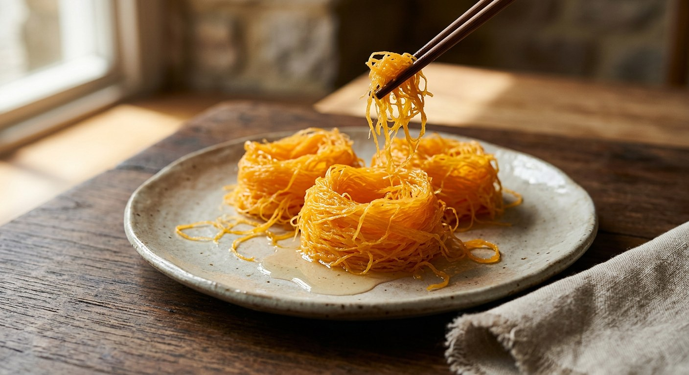

Egg yolks spun into fine golden threads in a pan of boiling jasmine syrup, lifted, washed in a second clear syrup and rolled into shining nests — the sweet that earned its maker the title "queen of Thai desserts".

ฝอยทอง means golden threads, and that is exactly what it is: egg yolk, drizzled through a banana-leaf cone in a slow circle over boiling sugar syrup, until it sets into a nest of hair-fine strands. It belongs to the เครื่องทอง, the family of gold-named sweets — ทองหยิบ, ทองหยอด, ฝอยทอง — that Thai cooks still make for weddings, ordinations and the new year, where gold means prosperity and long life.
The woman Thai tradition credits with the whole family is ท้าวทองกีบม้า, Marie Guimar de Pina, the half-Portuguese, half-Japanese wife of Constantine Phaulkon in the court of King Narai the Great — after her husband's execution she was taken into the palace and put in charge of its sweets, and kanomwanthai.wordpress.com records her as the originator of thong yip, thong yod and foi thong, honoured to this day as "ราชินีแห่งขนมไทย", the queen of Thai desserts.
The technique the Thai sources describe is deceptively precise. The yolks are beaten only until they just combine — never to a foam, Kapook and Aroifin both warn, or the threads snap as they fall — then strained through fine muslin, and fortified with น้ำค้างไข่, the watery white that clings inside the shell, which keeps the threads chewy and unbroken. The syrup must boil without stirring, or the sugar crystallises. And Wongnai's version, the one used here, finishes each nest with a rinse in a second, clear syrup — the wash that sheds the foam and sets the threads into their final, glossy shape.
| Thai | English | Amount |
|---|---|---|
| ไข่แดงไข่เป็ด | Duck egg yolks | 8 |
| ไข่แดงไข่ไก่ | Chicken egg yolks | 8 |
| น้ำตาลทรายขาว | White sugar (concentrated syrup) | 500 g |
| น้ำลอยดอกมะลิ | Jasmine water (concentrated syrup) | 500 ml |
| กลิ่นมะลิ | Jasmine essence | 1 tsp |
| น้ำตาลทรายขาว (น้ำเชื่อมใส) | White sugar (clear syrup) | 500 g |
| น้ำลอยดอกมะลิ (น้ำเชื่อมใส) | Jasmine water (clear syrup) | 1 litre |
The classic home batch (Kapook): 6 duck eggs and 3 chicken eggs to a whole kilo of sugar, 1,000 ml jasmine water and 4 pandan leaves tied in a knot, simmered until thick in a brass wok, 20–30 rounds per nest. The selling batch (TrueID, ครัวพิศพิไล): 20 duck eggs and 10 chicken eggs to 1 kg sugar in 1,000 ml water with pandan — plus 2–3 spoonfuls of strained egg white beaten into the yolks for smooth threads, and 1–2 tablespoons of sugar topped up between every round, then the finished nests air-dried on a bamboo tray so they keep for days. The simplest bowl (TrueID): 15 duck eggs, water instead of jasmine water, and a plastic bag with a pinhole instead of a cone.
One syrup or two. Wongnai alone makes a second, clear syrup and rinses every nest in it before shaping. Everyone else works with a single syrup and "washes" the threads by swishing them through the same boiling syrup they were cooked in — TrueID calls it ล้างวนด้วยน้ำเชื่อม. The two-syrup nest is glossier and cleaner; the single-syrup one is faster.
The eggs. The ratios scatter widely: Wongnai uses 8 duck and 8 chicken yolks to 500 g of sugar; Kapook and Aroifin use 6 duck and 3 chicken to a whole kilo; TrueID's selling batch is 20 duck and 10 chicken; TrueID's simple version drops chicken eggs entirely and uses 15 duck yolks alone. Duck yolk gives the deep orange of the name; chicken yolk stretches the batch and lightens it.
Egg white in the threads. TrueID's selling batch deliberately beats 2–3 spoonfuls of strained egg white into the yolks for threads that fall smooth and hold their line. Kapook and Aroifin put nothing in but the watery น้ำค้างไข่ from inside the shells — and warn that beating the yolks to a foam is what makes threads snap.
Pandan or jasmine. Wongnai scents the syrup with jasmine water (น้ำลอยดอกมะลิ) and a teaspoon of jasmine essence; Kapook and Aroifin tie pandan leaves into the same syrup instead; TrueID uses plain water plus jasmine essence. Kapook also carries a full ฝอยทองใบเตย from ครัวป้ามารายห์ — pandan blended into the yolks themselves, green threads on a 5-cups-water-to-6-cups-sugar syrup.
How many rounds. Kapook and Aroifin stop at 20–30 rounds per nest, Wongnai and TrueID's simple recipe wind 30–40, and the pandan version goes to 40–50. More rounds, denser nest.
Crisp or soft. TrueID's selling batch tops up 1–2 tablespoons of sugar before every new round and air-dries the rolled nests on a bamboo tray — a crisp, long-keeping foi thong built for market stalls. The home versions rest the nests on a rack just long enough to drain, and stay soft and chewy.
This recipe is translated from the following Thai-language sources. Where they disagree, we've said so.
1. Wongnai — "วิธีทำ 'ฝอยทอง' เมนูขนมไทยหวานฉ่ำ" (the recipe used here: the two-syrup method) — wongnai.com
2. Kapook — "ฝอยทอง สูตรอร่อย" (the classic home batch, plus the ฝอยทองใบเตย pandan version by ครัวป้ามารายห์) — cooking.kapook.com
3. TrueID Food — "ฝอยทองกรอบ" by ครัวพิศพิไล (the selling batch: egg white, sugar top-ups, air-drying) — food.trueid.net
4. TrueID Food — "สูตรทำ ฝอยทอง แบบง่ายๆ" by ครัวพิศพิไล (the plastic-bag cone and plain-water syrup) — food.trueid.net
5. Aroifin — "วิธีทำ ฝอยทอง ขนมมงคล สีเหลืองทองอร่าม เหนียวนุ่มหวานอร่อย" by thanyachanok (the classic batch and the steady-heat rule) — aroifin.com
6. Kanomwanthai.wordpress.com — "ท้าวทองกีบม้า (มารี กีมาร์ เดอ ปีนา)" (the history: Marie Guimar de Pina and the palace of King Narai) — kanomwanthai.wordpress.com